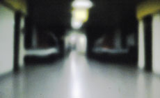
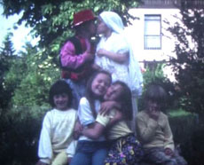

|
STEPHANIE KRAMER
Häschen in der Grube | 2009 | 2’04’’
Format: DV
Ton: Found Footage
Fahrt durch einen tunnelartigen Gang. Nur vage kann die Lokalität verortet werden, seitlich zeichnen sich verschwommen Krankenbetten ab. Begleitet von einer freien Interpretation des Kinderliedes "Häschen in der Grübe" gleitet man durch die Menschenleere im bläulich-grünen Neonlich.
Vogelhochzeit | 2010 | 2’18’’
Format: DV
Ton: Digitalaufnahme aus Hochzeitsfilm
Bild: Super-8-Found-Footage, 1980er Jahre
In dem Super-8-Filmfundstück aus den 80er Jahren ist eine Horde Kinder gefilmt die "Hochzeit" auf den Straßen ihres Wohnortes spielen. Über 20 Jahre später entstand eine Tonaufnahme, die den Moment vor einer realen Trauung dokumentiert.
Stephanie Kramer, geb. 1980 in München. 2001-04 Studium der Kunstgeschichte an der Ludwig-Maximilians-Universität München. Seit 2004 Studium an er Akademie der bildenden Künste, München.
Ausstellungen (Auswahl): 2010 "Was ist schön?", Hygiene Museum Dresden, Dresden, Feldflug - Klasse Hien,Puchhaiem, Schüttele goes Paradise, München | 2009 "Bildschön Schönheitskult in der aktuellen Kunst", Städtische Galerie Karlsruhe, "Wunderkammer", Projekt Premium 2000, München, "Premio internatzionale di cultura - Edgardo Mannucci", bei Ancona, Italien (16. internationaler Skulpturenpreis, besondere Erwähnung) | 2008 "Kunsträume Bayern"“, Mainburg, "Meandern", f 5,6 Galerie für Fotographie, München, "Special Edition", f 5,6 Galerie für Fotographie, München, "Winterspiele", Galerie Neumeister, München
zurück
|